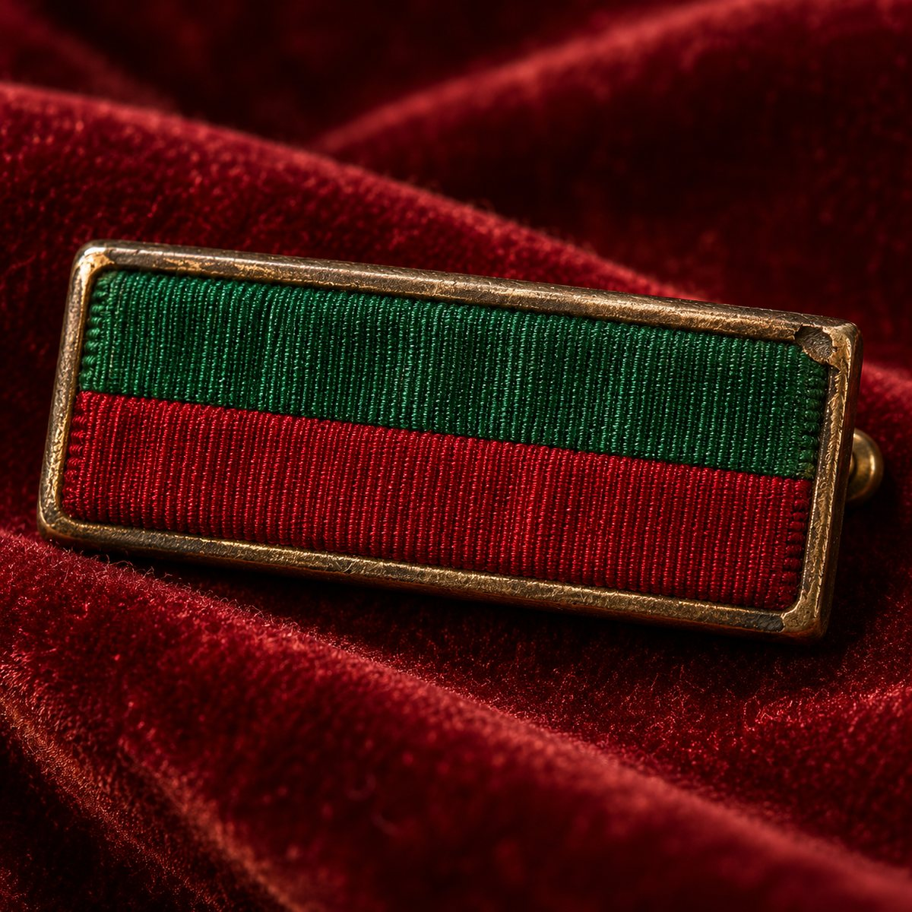

Livre premier
Chroniques
Ce que j'ai fait, dans l'ordre où je l'ai fait, raconté par le seul témoin dont je me porte garant.
-
Arrivée à Port Magmor
J'écris sur le comptoir du Rhum à ranger, parce que la table qu'on m'a donnée est trop petite pour un homme et sa plume. Le tavernier me regarde de travers. Il a ses raisons : Monsieur le Baron vient de lui mordre la main, parce qu'il a servi la bière avant le vin.
Je croyais qu'on allait nous jeter dehors. On nous a donné une chambre. Je ne comprends rien à cette ville, et elle me plaît déjà.
Le hareng fumé de la maison a un goût de goudron. J'en ai repris deux fois. Le Baron, pas une : il a des principes.
-
Le Ruban Bicolore
Je sors de l'Université avec le Ruban Bicolore épinglé sur le cœur, un peu à gauche, là où il se voit le mieux. L'examinateur m'a demandé si c'était bien ma deuxième tentative. J'ai répondu que la première était un échauffement. Il a écrit quelque chose dans la marge.
L'épingle me gratte à travers le pourpoint depuis midi. Je ne l'enlèverai pas. Monsieur le Baron a essayé de la manger pendant la remise ; l'assistance a cru qu'il saluait.

Le Ruban Bicolore, dans son écrin, avec le parchemin de l'examen. -
Le Castel Bretelle
Ce soir, je dors chez moi. Le Castel Bretelle tient debout, juste à côté de la fontaine, avec une tour, parce qu'un homme sans tour n'est qu'un locataire. Les maçons sont partis avec mes trois derniers fromages ; je suppose que c'était compris dans le prix.
Monsieur le Baron a fait le tour des pièces et il a choisi la mienne. Je me suis replié dans la tour. Elle est froide, elle a des courants d'air, et j'y entends la fontaine toute la nuit. Je n'ai jamais été aussi heureux.

Le Castel Bretelle au coucher du soleil, vu depuis la fontaine. -
La Korsaire, et le pavillon de Dame Korail
Dame Korail m'a mis La Korsaire dans les mains ce matin, encore tiède de la forge. Je l'ai tenue longtemps sans rien dire, et elle a cru qu'elle ne me plaisait pas. Je cherchais seulement un mot à sa hauteur. Pour une fois, je n'en avais pas.
Dans la foulée, je suis entré au Royaume Pirate de Ruthvénie. Je ne sais plus si c'est moi qui ai demandé ou elle qui a proposé : j'ai dit oui avant la fin de la phrase, comme on attrape une corde.
Je lui dois l'épée et le pavillon, et j'ignore encore comment on rembourse ce genre de dette. Monsieur le Baron s'est endormi sur le fourreau, ce qui, chez lui, vaut un serment.

La Korsaire, sur velours. -
Le coup d'État d'Émile Liarr
Ce matin, le Royaume avait deux rois, ou aucun, selon la personne qu'on interrogeait. À midi, Émile Liarr avait repris la couronne depuis le Valégro, sans un coup de feu. Je n'ai rien vu : j'étais au fond d'une taverne, à attendre qu'on vienne me dire qui avait gagné.
Autour de moi, chacun regardait son voisin. Moi, je regardais mon assiette de pieds de cochon, et j'ai compris qu'un homme ne reste pas neutre devant des pieds de cochon. Je me suis rallié par écrit, devant tout le Royaume. C'est fait. Je ne jure qu'une fois.
Monsieur le Baron a marché dans l'encrier et il a signé à côté de moi.
La chanson : Vive le Roy Emile

Le Retour du Roy, fresque. -
Ministre de l'Information
Me voici Ministre de l'Information, à la tête de la Commanderie de la Musique et des Esgourdes. On m'a donné un bureau, une tribune et un tabouret qui boite. J'ai gardé le tabouret : un homme d'État doit rester en mouvement.
Je n'ai jamais eu besoin de repasser un examen de ma vie, et cela se voit dans ma façon de tenir une plume. Mon premier communiqué tient en une page, le deuxième en onze. Je commence à comprendre le métier.
Monsieur le Baron a pris la tribune. Je parle depuis le tabouret.

Au pupitre du Ministère, dans l'exercice de mes fonctions. -
Les cent étages de la Grande Termitière
J'écris dans l'escalier de la descente, vers le soixantième étage, une main sur la plume et l'autre sur mes chausses. Ma ceinture est restée là-haut, clouée dans la pierre. Je l'ai déposée, je ne l'ai pas perdue, et je refuse qu'on en discute.
En montant, des araignées sont reparties sans leurs chausses ; j'ignorais qu'elles en portaient. Puis un Gorille Géant, qui n'en portait pas du tout : je lui ai taillé une ceinture dans sa propre peau, pour la lui retirer dans les règles. Je crois que je viens d'inventer une technique. Je lui trouverai un nom quand j'aurai les deux mains libres.
J'étais venu dans la région pour trouver un ocarina. Je n'en ai pas vu l'ombre d'un, ni en bas, ni en haut. Thalassa recompte nos fioles, Felony recompte ses phalanges, et Monsieur le Baron a mangé un œuf de termite sans m'en proposer.
-
La chute du Roy
J'écris couché, le bras droit en écharpe, de la main gauche, d'où l'écriture. Des voleurs de bétail m'ont attaqué ; je les ai occis, puis déculottés, comme il se doit. Le troupeau n'y a pas vu un sauvetage : un cheval m'a renversé, une vache m'a piétiné, et deux moutons ont achevé le travail. Je n'ai jamais eu peur des bêtes.
Pendant ce temps, Wenceslas a pris le trône à Émile, et l'on m'a demandé de jurer fidélité au nouveau maître. J'ai juré il y a quatre jours, par écrit, devant tout le Royaume : je ne jure pas deux fois dans la même semaine. J'ai remis ma charge. J'attends une décision, et personne ne m'en donne, ce qui est presque plus vexant qu'une destitution.
Monsieur le Baron monte la garde sur mon oreiller et siffle dès qu'on approche. Le médecin m'ausculte depuis le couloir. Ma soupe arrive froide, glissée sous la porte.